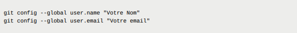

GIT
Git est un système de contrôle de version open source. Concrètement, c’est un outil qui permet de traquer tous les fichiers d'un projet. Chaque modification de fichier est alors détectée par Git et versionnée dans une version instantanée. Un historique de modification va être disponible sur le projet. Et on pourra le consulter et pourquoi pas même revenir en arrière dans le temps
Avantage
- Savoir qui a touché quel fichier sur un projet quand et comment
- Ne peut pas géner un autre développeur sur son son travaille grâce à son système de branche
- Chaque développeur va pouvoior travailler en parallèle avec leur propre copie du projet sur une branche personnelle
- Git est décentralisé, l'historique des fichiers est présent dans chacune des machines ou se trouve le projet
- Permet d'éviter de copier un fichier et ainsi de garder sa capacités de stockage sur sa machine
Les différents dépots
- Directement dans les fichiers de la machine
- Grâce à un logiciel de dépot en ligne comme GitHub, Git Lab.
Installation et Configuration
Si c'est la première utilisation de git sur la machine, il faudra configurer votre nom et votre email, il est mieux d'utiliser le même noms et le même email pour faciliter le dépôt en ligne, pour le noms d'utilisateur type PrenomsNOM et cette configuration peut se faire depuis n'importe quel dossier, on commence pars ouvrir un git gash bash pour configurer le profil et on saisit :
Différentes commande
Pour utiliser ces commandes, il faut ouvrir git bash dans le fichier qu'on souhaite utiliser le git
- git init
Permet d'informer git qu'on va effectuer des modification
- ls -a
C’est dans ce dossier que git va stocker les modifications apportées à notre projet. En général, nous n’irons pas voir ce qu’il s’y passe et nous laisserons git gérer ce dossier
- git status
Cette commande nous montre 3 choses :
- Permet de savoir dans quel branche, on se situe
- Les différents commit (un commit sert pour capturer l'état d'un projet à un point dans le temps).
- Le répertoire de travail
- git add noms_fichier.html/c/cpp/java...
Cette commande permet de dire à git qu'il faut prendre en compte les modification apportées au fichier
Faire un commit
Pour mieux expliqué, Git peut être considéré comme un utilitaire de gestion de la chronologie. Les commits constituent les piliers d'une chronologie de projet Git. Les commits peuvent être considérés comme des instantanés ou des étapes importantes dans la chronologie d'un projet Git. Ils sont créés grâce à la commande git commit pour capturer l'état d'un projet à un point dans le temps. Les instantanés Git sont toujours commités dans le dépôt local.
- git commit -m "N'importe quel message"
Première informations importante, on est dans l'obligation de marquer un message et cela sera plus simple pour indiquer les différentes versions du projet ou un changement dans le programme. En réponse à ce commit, git nous dit combien de fichiers ont été modifié et le nombre de lignes qui ont été insérée. Il dirait aussi le nombre de lignes supprimées le cas échéant.
- git add
On avait déjà lister cette commande avec un fichiers derrière. Mais cette commande va ajouter tous les fichiers modifiés du dossier à la zone de préparation, mais il peut y avoir certains fichiers ou dossiers qu’on ne veut pas prendre en compte, pour cela, on crée un fichier intitulé .gitignore et on liste à l’intérieur le nom des fichiers ou dossiers qu’on ne veut pas suivre.
La syntaxe est la suivante: chaque ligne de ce fichier correspond à un fichier/dossier à ignorer. Pour ignorer un fichier, on écrit NomDuFichier et on passe à la ligne. Pour ignorer un dossier, on écrit /NomDuDossier et on passe à la ligne. Par exemple, vous voudrez ignorer les fichiers compilés en .class ou les a.exe par exemple, puisqu’il vont être source de conflit à chaque compilation. Les dossiers où sont installés des bibliothèques comme node_modules également
- git log
Cette commande liste les derniers commits effectués sur la branche en cours. Chaque commit possède un identifiant unique, qui est une suite de caractère hexadécimaux. Ces caractères sont obtenus à l’aide d’une fonction de hachage.
Une fonction de hachage est un énorme programme composés principalement de ET et de OU arrangés de manière extrêmement compliquée. Elle peut prendre en entrée une chaîne de caractère, un fichier texte, une image, même plusieurs fichiers et des centaines d’images. Elle passe tous ces fichiers dans ses portes logiques extrêment compliquées et elle renvoie une chaîne de caractère hexadécimaux.
- git revert HEAD-1
Cette commande va restaurer les fichiers dans leur état du dernier commit et créer un nouveau commit pour sauvegarder cet état. Ce commit nécessite un message, la commande va ouvrir un éditeur de texte avec le message par défault ‘Revert “message du dernier commit” ‘. Si vous êtes d’accord, vous pouvez fermer l’éditeur et le commit sera créé.
- HEAD~2 (revient de 2 commits en arrière)
- HEAD~3 (revient de 3 commits en arrière
etc ...
- git rebase
Une autre commande que nous aimerions évoquer est la commande git rebase . Si l’historique de votre git était un arbre, git rebase permet de tronçonner une branche pour la recoller depuis un autre commit de la branche principale. La fusion devient alors beaucoup plus lisible et cela évite les commits de fusion qui polluent un peu l’historique des commits.
Crée une branche
- git branch nom_branche
Cela sert pour crée une nouvelle branche
- git checkout nom_branche
Pour changer sa position et aller sur la branche désiré
- git checkout coordonnees
Pour avoir une vision des branches existantes
La fusion des branches
- git merge nom_branche
Cela va fusionner la branche principale avec la branche que vous avez crée
- git branch -d nom_branche
C'est pour effacer une branche, c'est pratique quand voulez effacer une branche que vous avez déjà fusionner avec la branche principale
Un conflit ?
Si GIT annonce qu'il y a eu un conflit la fusion automatique n'a pas fonctionnée, on devra régler le conflit à la main
git a modifié le fichier à l’endroit du conflit pour afficher les deux versions. Si vous avez un éditeur intelligent ( visual studio par exemple ) l’éditeur vous propose des options toutes prêtes: Accept incoming change, accept both, ... Si vous éditez vos fichiers au bloc notes, vous devrez modifier à la main, retirer ce que git a ajouté et régler le conflit.
Lorsque vous avez terminé, vous pouvez enregistrer le fichier, l’ajouter à la zone depréparation puis faire un commit pour créer le point de sauvegarde.
Stocker en ligne
Rendez-vous sur un site comme GitHub, Git Lab, crée un compte avec la même adresse mail que vous avez renseigné à git et le même nom d'utilisateur, crée un nouveau dépot qui a pour nom username.github.io
- L’option public fait que tout le monde a accès au code
- Avec l’option Private, vous seul avez accès
Pour synchroniser votre dépôt local avec le dépot en ligne, tout se fait depuis votre git bash local. Tout d'abord faudra copier l'URL du dépot (trouvable sur la page du dépôt)puis saisissez dans le git bash
- git remote add origin URLDeVotreDepotEnLigne
Maintenant faudra uploader le code en ligne
- git push --set-upstream origin maste
En général, la commande git push permet de téléverser son code dépuis le dépôt local vers le dépôt en ligne.
Comme votre dépôt en ligne est protégé, il faudra que vous prouviez votre identité pour assurer à github que vous possédez les droits de modifier le dépôt.Par exemple, GitHub va donc demander votre nom d’utilisateur et votre mot de passe
En général, on ne saisit pas son mot de passe à chaque fois qu’on veut synchroniser son dépôt en ligne. On met en place des clés SSH, nous expliquerons dans la suite du site web
- git pull
La commande git pull permet de télécharger son code depuis le dépôt en ligne vers le dépôt local, sert uniquement quand plusieurs personne travaille sur le même projet
Clés SSH
Les clés sont stockés dans un fichier caché sur votre ordinateur situé à la racine de votre répertoire personnel
Commencer par vérifier que vous n'avez aucune clé ssh, veuillez saisir cette commande
- ls -a ~/.ssh
Les clés SSH vont par deux: par exemple
- id_rsa: le fichier contenant la clé privée ( sans extension )
- id_rsa.pub: le fichier contenant la clé publique ( extension .pub )
- ssh-keygen -t ed25519 -C "your_email@example.com"
Pour générer une nouvelle paire de clés
La commande se déclenche avec ces différentes options
- Un chemin pour stoker la clé
- Passphrase: La clé privée vous permettra de vous connecter directement sans taper de mots de passe. Si quelqu’un accède à votre ordinateur, il pourra donc se faire passer pour vous. Pour empêcher cela, vous pouvez saisir une passphrase qui vous sera demandée dès que la clé est utilisée. Vous pouvez laissez une phrase vide si vous le désirer.
Vous avez maintenant généré une clé publique dans un fichier id_ed25519.pub et une clé privée dans un fichier id_ed25519. Ses fichiers se trouvent dans le dossier ~/.ssh
- eval "$(ssh-agent -s)"
Permet de les ajouter au gestionnaire des clés ssh
- ssh-add ~/.ssh/id_ed25519
Pour lui de considérer la clé que vous venez de générer
Enfin, il faut ajouter la clé publique dans l’interface du git en ajoutant une nouvelle clé SSH sur l'interface du git
Synchroniser un dépot local et un dépot distant
- git remote add origin URLDeVotreDepotEnLigne
Pour crée un nouveau dépot
- git push -u origin master
Pour uploader le code en ligne
- git pull
Pour mettre à jour le dépôt local
En lançant cette commande, git va aller chercher la version en ligne et la fusionner avec votre version locale. Il peut y avoir conflit si les deux versions ont modifié les mêmes lignes, dans ce cas, vous devrez régler le conflit, ajouter les fichiers à la zone de préparation et faire un nouveau commit. A chaque fois que vous voudrez mettre à jour le dépôt distant pour sauvegarder vos modifications locales, vous devrez utiliser git push. Pour cela, il faudra que votre répertoire de travail soit propre et que toutes vos modifications aient été intégrées dans un commit.
Travailler à plusieurs avec github
- Aller dans les paramètres de votre dépôt distant: l’onglet “settings” avec la roue dentée
- Accéder au panneau “collaborators”
- Cliquer sur add people et tapez le nom d’utilisateur de vos collègues et ajoutez les
- Vos collègues doivent maintenant aller accepter l’invitation en cliquant sur le lien qu’ils ont reçu par mail
- Vos voisins ont accès à votre dépôt et peuvent envoyer du code
- git clone URLduDepotDistant
Pour se placer dans un dépot vide
Une fois que les fichiers ont été téléchargés, vous pouvez travailler dessus et les modifier. Ajouter une ligne au fichier index.html pour ajouter une facette de la personnalité de votre collègue qu’il n’a pas précisé sur sa page, puis faite un commit avec cette modification
- git push
Pour envoyer votre code sur le dépôt distant de votre collègue
- git pull
Pour télécharger la version la plus récente, qu'il règle les conflits s'il y en a
{kind=link}
{kind=link}
{kind=link}
{kind=link}